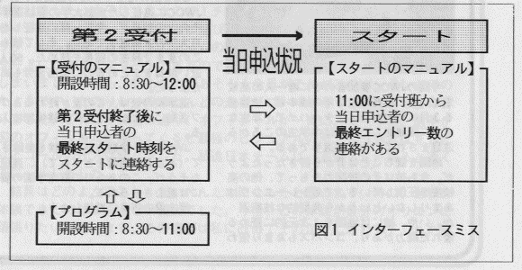
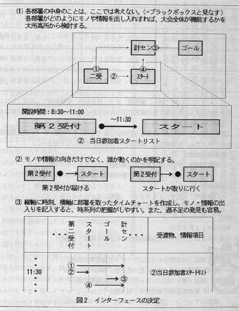

|
 |
【第３部】運営マニュアル(O-Japan 1994.9月号掲載)
現行マニュアルを点検する
現在の運営マニュアルが、守備範囲の狭さという大きな問題を抱えていることは、前回も述べた通りである。当然、これからは、その範囲を広げていくことを考えなければならない。が、その問題については、次々回くらいに触れることにして、今回は、現在の運営マニュアルにおける、その他の問題点について考えてみたい。
連載初回のイントロダクションでも述べた通り、私は、卒業後すでに７回、早大ＯＣ大会の運営に携わっている。なかでも平成２年度の第13回大会（『乙女道路』）は、第12回大会（『忍野八海』）における電光速報失敗の翌年ということもあり、最も深くかかわった大会である。この年、私は、計算センター関連だけでなく、運営マニュアル全体をかなり細かくチェックして、その不具合をまとめ、チーフ会に提示した。その指摘項目を内容別に分類してカウントした結果を表１に示す。
表１．第13回早大ＯＣ大会のマニュアルに対する指摘
| 指摘内容 | 件数 |
| 誤りや記述不足 | 17 |
| インターフェースミス | 13 |
| ５Ｗ１Ｈが不明確 | 10 |
| 「こんな場合は？」という例題 | 5 |
| 実物，実際の運営方法との不一致 | 5 |
| 改善提案 | 5 |
このように、私の指摘の中で最も数が多いのは「誤りや記述不足に関する指摘」である。これは、重箱の隅をつついたような指摘で、たいして重要ではない。重要なのは２番目の「インターフェースミス」である。
インターフェースは、文字通り、接触面、接点の意。つまり、インターフェースミスとは、部署と部署の接点で起こる食い違い、部署間の連携にかかわるミスのことである。
また、すでに外部に発表済の要件とマニュアルの内容にズレがあるケースについても、インターフェースミスと呼ぶことができる。両者を区別する場合は、前者を内部インターフェースのミスと呼び、後者を外部インターフェースのミスと呼ぶ。単にインターフェースミスと言った場合は、おもに前者を指す。
さて、私がインターフェースミスを重要視するのは、それが重大な結果をもたらすからだけでなく、大会を計画する作業そのものの進め方の誤りに起因していると考えるからである。そこで、今回は、このインターフェースミスの問題を中心に、マニュアル作成時の留意点について述べることにしよう。
インターフェースをまず決める
『乙女道路』のマニュアルから実例を挙げよう。図１を参照されたい。ここには、一例にして内部と外部の両方のインターフェースミスが含まれており、インターフェースミスを説明するのには、まさにうってつけである。言うまでもなく、内部インターフェースミスとは「受付がスタートに連絡する情報の内容と時刻の食い違い」であり、外部インターフェースミスとは「第二受付終了時刻のプログラムとマニュアルとの食い違い」である。

第二受付の終了時刻については、プログラムよりマニュアルの方が遅くなっているので、参加者に迷惑をかけることはないものの、このままではスタート役員を１時間以上も待たせることになる。また、情報項目については、より深刻である。スタート班では、最終エントリー数を連絡してもらって、全員出走したか否かの確認をしたいのだろうが、最終スタート時刻を聞いたところで、どうすることもできない。前提としている情報が入ってこないために、スタート班で用意したロジックが、まったく機能しなくなってしまうのである。もっとも、スタート班も最終スタート時刻を教えてもらわなければ、何時までいれば良いかの見通しが立たない。その意味では、最終スタート時刻の通知にも一理ある。受付班のマニュアルは、スタート役員のためを思っての記述なのだろうか？──いずれにしても、このマニュアルの、この部分はボロボロだと言って良い。
果たして、皆さんのクラブのマニュアルは大丈夫だろうか？──各パートのモノや情報項目の入りと出と、その運び手、および、その時刻を書き出してみよう。さらには、プログラムと突き合わせてチェックしてみよう。そうすると、見た目とは裏腹にボロボロだったりするかも知れない。
大会というシステムは、部署というサブシステムが、他の部署に対して出すべき情報を出すべき時点で出し、受け手が受け取って、加工の上、また出す──その正常な連鎖の結果、初めて正常に動作する。このＯＣ大会のマニュアルは、各部署内部の仕事のやり方については良く書かれていたものの、部署間の整合性に問題があった。発信者だけで受信者のない情報、要求はあっても発信者がいない情報や、時間的なズレ、そこにあるはずがないのにどういうわけか使われているモノなど、多くのインターフェースミスが見受けられたのである。しかし、実際には、そのインターフェースの方が、はるかに重要なのだ。どんなにやり方が立派でも、アウトプットが見当違いではどうしようもないではないか。逆に、各部署が、出すべきアウトプットを正しく出していれば、内部のやり方はどうであれ、大会は正しく機能するのである。
では、なぜ不整合が多発したか───。
それは、各パートが思い思いに作ったマニュアルを突き合わせて、後で調整しようなどというボトムアップ的な手法をとったからであろう。地図調査を境界合わせから始めるように、本来、マニュアル作りも、まずパート間の約束ごと、インターフェース固めから入らなければならないのである。部署というブラックボックスと、モノや情報の入りと出とその主語、および、その時刻だけを記入した１枚の図を作り上げることが先決なのだ。その上で、各部署が、そこで定めた約束ごとを実現できるように内部を構築していく。それが正しい進め方である。（図２参照）

マニュアル先行なら毎回共通の指針を
さて、もう一つの不整合、プログラムとマニュアルのインターフェースミス──これは、本来、あってはいけないことだ。そもそも、プログラム上で宣言したことを実現するための内部的なやり方を記述するのがマニュアルである。したがって、マニュアルがプログラム記載事項にのっとっていないというのは、本末転倒以外の何物でもない。しかし、現実には、ほとんどの場合において、プログラム作成よりもマニュアル作成を先行させている。確かに、この状況下では両者の整合性を確保するのも容易なことではない。
たとえば、ストリーマーの色ひとつを例に取っても、マニュアル作成時点で決まっているとは限らない。このような場合、マニュアル執筆者がとりあえず適当に見つくろって書いておくなどということをしてはいけない。そんなことをするくらいなら、「プログラム参照」とでも書いておいた方が、はるかに良心的で、正確というものだ。マニュアルは、本来的に、プログラム掲載事項に従うべきものなのだから。
とは言え、このような記述では、いかんせん現実味に欠け、具体性に乏しい。そこで、ストリーマーの色であるとか、受付開設時間、表彰式の開始時刻といったルーティーンな項目については、過去の事例に基づくなどして、毎回共通なものとして、決めておくことが望ましい。三重県庁ＯＬＣの早川正美氏によると、東海地区ＯＬ連絡協議会では、すでにストリーマー使用色の指針を設け、運用しているという。（ＰＣ－ＶＡＮのＯＬフォーラムより）
このように、いわばルール化しておくことにより、仮にマニュアル作成を先行させた場合でも、それをよりどころとして、迷うことなく記述することができる。プログラムとマニュアルの双方が、共通のよりどころを持つことによって、外部インターフェースミスを未然に防ぐことができるのである。
マニュアルというと、私たちは、すぐに細かなhow toが記されたものを思い浮かべるが、大会運営マニュアルは、それとは少々異なるものと考えた方が良いのかも知れない。大会のマニュアルは、マニュアル兼 "大会の設計図" なのだ。運営者は、これを作ることを通じて自分たちの大会を構築する。しかし、この設計図には重大な欠陥があった。各部屋の内装ばかりが描かれ、満足な見取り図や外観図がなかったのである──。